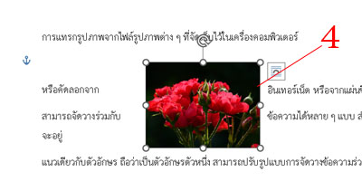
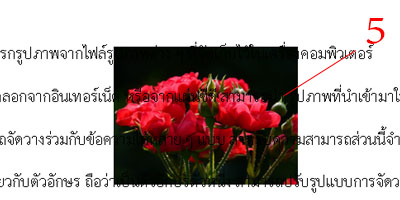
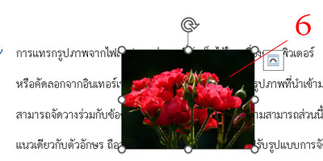
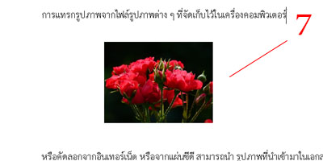
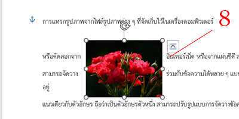
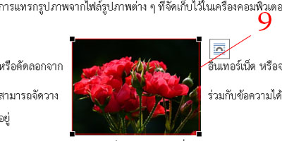

1.คลิกเมาส์ที่รูปภาพ
2.คลิกเมาส์ปุ่ม Wrap Text (ตัดข้อความ)
3.คลิกเมาส์ปุ่ม In Line With Text (แนวเดียวกับข้อความ) รูปภาพจะวางแนวเดียวกับข้อความ






4.คลิกเมาส์รายการ Square (จัตุรัส) หรือ Tight (ล้อมรอบ) จะคล้าย ๆ กัน ข้อความจะอยู่รอบล้อมรอบรูปภาพ
5.คลิกเมาส์ปุ่ม Behind Text (ข้างหลังข้อความ) รูปภาพจะวางไว้ข้าหลังข้อความ
6.คลิกเมาส์ปุ่ม In Front of Text (ข้างหน้าข้อความ) รูปภาพจะวางไว้ข้างหน้าข้อความ
7.คลิกเมาส์ปุ่ม Top and Bottom (บนและล่าง) ตัดข้อความด้านบนและด้านล่างของรูปภาพ
8.คลิกเมาส์ปุ่ม Through (ทะลุผ่าน) ตัดข้อความอยู่รอบ ๆ ขอบเขตและภายในของส่วนที่เปิดอยู่ของรูปภาพ
9.คลิกเมาส์ปุ่ม Edit Wrap Points (แก้ไขจุดตัด) จะได้ภาพที่มีเส้นสีแดงล้อมรอบสำหรับรูปภาพ